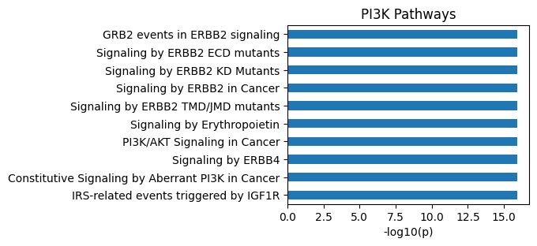

df1 = pd.DataFrame({'gene': ['A', 'B', 'C']})
df2 = pd.DataFrame({'gene': ['B', 'C', 'D']})
df1_unq, df2_unq = get_diff(df1, df2, 'gene')Preprocess
Functions to preprocess sequence to prepare kinase substrate dataset
Setup
from katlas.utils import *Commons
save_show
save_show (path=None)
Show plot or save path
| Type | Default | Details | |
|---|---|---|---|
| path | NoneType | None | image path, e.g., img.svg, if not None, will save, else plt.show() |
get_path
get_path (dir_path, fname)
Ensure the directory exists and return the full file path.
get_path('~/img/folder','test.svg')get_diff
get_diff (df1, df2, col1, col2=None)
Get non-overlap parts of two dataframes.
df1_unq| gene | |
|---|---|
| 0 | A |
df2_unq| gene | |
|---|---|
| 2 | D |
Checker
In many phosphorylation datsets, there are amino acids in the site sequence that are in lower case but does not belong to s/t/y. Also, there are uncommon amino acids such as U or O that appear in the sequence. Therefore, it is essential to convert the sequence string for kinase ranking.
check_seq
check_seq (seq)
Convert non-s/t/y characters to uppercase and replace disallowed characters with underscores.
try:
check_seq('aaadaaa')
except Exception as e:
print(e)aaadaaa has d at position 3; need to have one of 's', 't', or 'y' in the centercheck_seq('AAkUuPSFstTH') # if the center amino acid does not belong to sty/STY, will raise an error'AAK__PSFstTH'check_seqs
check_seqs (seqs:pandas.core.series.Series)
Convert non-s/t/y to upper case & replace with underscore if the character is not in the allowed set
check_seq_df
check_seq_df (df, col)
Convert non-s/t/y to upper case & replace with underscore if the character is not in the allowed set
df=Data.get_human_site()
df.head()| substrate_uniprot | substrate_genes | site | source | AM_pathogenicity | substrate_sequence | substrate_species | sub_site | substrate_phosphoseq | position | site_seq | |
|---|---|---|---|---|---|---|---|---|---|---|---|
| 0 | A0A024R4G9 | C19orf48 MGC13170 hCG_2008493 | S20 | psp | NaN | MTVLEAVLEIQAITGSRLLSMVPGPARPPGSCWDPTQCTRTWLLSH... | Homo sapiens (Human) | A0A024R4G9_S20 | MTVLEAVLEIQAITGSRLLsMVPGPARPPGSCWDPTQCTRTWLLSH... | 20 | _MTVLEAVLEIQAITGSRLLsMVPGPARPPGSCWDPTQCTR |
| 1 | A0A075B6Q4 | None | S24 | ochoa | NaN | MDIQKSENEDDSEWEDVDDEKGDSNDDYDSAGLLSDEDCMSVPGKT... | Homo sapiens (Human) | A0A075B6Q4_S24 | MDIQKSENEDDSEWEDVDDEKGDsNDDYDSAGLLsDEDCMSVPGKT... | 24 | QKSENEDDSEWEDVDDEKGDsNDDYDSAGLLsDEDCMSVPG |
| 2 | A0A075B6Q4 | None | S35 | ochoa | NaN | MDIQKSENEDDSEWEDVDDEKGDSNDDYDSAGLLSDEDCMSVPGKT... | Homo sapiens (Human) | A0A075B6Q4_S35 | MDIQKSENEDDSEWEDVDDEKGDsNDDYDSAGLLsDEDCMSVPGKT... | 35 | EDVDDEKGDsNDDYDSAGLLsDEDCMSVPGKTHRAIADHLF |
| 3 | A0A075B6Q4 | None | S57 | ochoa | NaN | MDIQKSENEDDSEWEDVDDEKGDSNDDYDSAGLLSDEDCMSVPGKT... | Homo sapiens (Human) | A0A075B6Q4_S57 | MDIQKSENEDDSEWEDVDDEKGDsNDDYDSAGLLsDEDCMSVPGKT... | 57 | EDCMSVPGKTHRAIADHLFWsEETKSRFTEYsMTssVMRRN |
| 4 | A0A075B6Q4 | None | S68 | ochoa | NaN | MDIQKSENEDDSEWEDVDDEKGDSNDDYDSAGLLSDEDCMSVPGKT... | Homo sapiens (Human) | A0A075B6Q4_S68 | MDIQKSENEDDSEWEDVDDEKGDsNDDYDSAGLLsDEDCMSVPGKT... | 68 | RAIADHLFWsEETKSRFTEYsMTssVMRRNEQLTLHDERFE |
check_seq_df(df.head(),'site_seq')0 _MTVLEAVLEIQAITGSRLLsMVPGPARPPGSCWDPTQCTR
1 QKSENEDDSEWEDVDDEKGDsNDDYDSAGLLsDEDCMSVPG
2 EDVDDEKGDsNDDYDSAGLLsDEDCMSVPGKTHRAIADHLF
3 EDCMSVPGKTHRAIADHLFWsEETKSRFTEYsMTssVMRRN
4 RAIADHLFWsEETKSRFTEYsMTssVMRRNEQLTLHDERFE
Name: site_seq, dtype: objectvalidate_site
validate_site (site_info, seq)
Validate site position residue match with site residue.
site='S610'
seq = 'MSVPSSLSQSAINANSHGGPALSLPLPLHAAHNQLLNAKLQATAVGPKDLRSAMGEGGGPEPGPANAKWLKEGQNQLRRAATAHRDQNRNVTLTLAEEASQEPEMAPLGPKGLIHLYSELELSAHNAANRGLRGPGLIISTQEQGPDEGEEKAAGEAEEEEEDDDDEEEEEDLSSPPGLPEPLESVEAPPRPQALTDGPREHSKSASLLFGMRNSAASDEDSSWATLSQGSPSYGSPEDTDSFWNPNAFETDSDLPAGWMRVQDTSGTYYWHIPTGTTQWEPPGRASPSQGSSPQEESQLTWTGFAHGEGFEDGEFWKDEPSDEAPMELGLKEPEEGTLTFPAQSLSPEPLPQEEEKLPPRNTNPGIKCFAVRSLGWVEMTEEELAPGRSSVAVNNCIRQLSYHKNNLHDPMSGGWGEGKDLLLQLEDETLKLVEPQSQALLHAQPIISIRVWGVGRDSGRERDFAYVARDKLTQMLKCHVFRCEAPAKNIATSLHEICSKIMAERRNARCLVNGLSLDHSKLVDVPFQVEFPAPKNELVQKFQVYYLGNVPVAKPVGVDVINGALESVLSSSSREQWTPSHVSVAPATLTILHQQTEAVLGECRVRFLSFLAVGRDVHTFAFIMAAGPASFCCHMFWCEPNAASLSEAVQAACMLRYQKCLDARSQASTSCLPAPPAESVARRVGWTVRRGVQSLWGSLKPKRLGAHTP'validate_site(site,seq)1validate_site_df
validate_site_df (df, site_info_col, protein_seq_col)
Validate site position residue match with site residue in a dataframe.
validate_site_df(df.head(),'site','substrate_sequence')0 1
1 1
2 1
3 1
4 1
dtype: int64Phosphorylate protein seq
phosphorylate_seq
phosphorylate_seq (seq, *sites)
Phosphorylate protein sequence based on phosphosites (e.g.,S140).
| Type | Details | |
|---|---|---|
| seq | full protein sequence | |
| sites | VAR_POSITIONAL | site info, e.g., S140 |
seq = 'MSKSESPKEPEQLRKLFIGGLSFETTDESLRSHFEQWGTLTDCVVMRDPNTKRSRGFGFVTYATVEEVDAAMNARPHKVDGRVVEPKRAVSREDSQRPDAHLTVKKIFVGGIKEDTEEHHLRDYFEQYGKIEVIEIMTDRGSGKKRGFAFVTFDDHDSVDKIVIQKYHTVNGHNCEVRKALSKQEMASASSSQRGRSGSGNFGGGRGGGFGGNDNFGRGGNFSGRGGFGGSRGGGGYGGSGDGYNGFGNDGSNFGGGGSYNDFGNYNNQSSNFGPMKGGNFEGRSSGPHGGGGQYFAKPRNQGGYGGSSSSSSYGSGRRF'
phosphorylate_seq(seq,*['S95', 'S22', 'T25', 'S6', 'S158'])'MSKSEsPKEPEQLRKLFIGGLsFEtTDESLRSHFEQWGTLTDCVVMRDPNTKRSRGFGFVTYATVEEVDAAMNARPHKVDGRVVEPKRAVSREDsQRPDAHLTVKKIFVGGIKEDTEEHHLRDYFEQYGKIEVIEIMTDRGSGKKRGFAFVTFDDHDsVDKIVIQKYHTVNGHNCEVRKALSKQEMASASSSQRGRSGSGNFGGGRGGGFGGNDNFGRGGNFSGRGGFGGSRGGGGYGGSGDGYNGFGNDGSNFGGGGSYNDFGNYNNQSSNFGPMKGGNFEGRSSGPHGGGGQYFAKPRNQGGYGGSSSSSSYGSGRRF'phosphorylate_seq_df
phosphorylate_seq_df (df, id_col='substrate_uniprot', seq_col='substrate_sequence', site_col='site')
Phosphorylate whole sequence based on phosphosites in a dataframe
| Type | Default | Details | |
|---|---|---|---|
| df | |||
| id_col | str | substrate_uniprot | column of sequence ID |
| seq_col | str | substrate_sequence | column that contains protein sequence |
| site_col | str | site | column that contains site info, e.g., S140 |
df=Data.get_human_site()
df.head()| substrate_uniprot | substrate_genes | site | source | AM_pathogenicity | substrate_sequence | substrate_species | sub_site | substrate_phosphoseq | position | site_seq | |
|---|---|---|---|---|---|---|---|---|---|---|---|
| 0 | A0A024R4G9 | C19orf48 MGC13170 hCG_2008493 | S20 | psp | NaN | MTVLEAVLEIQAITGSRLLSMVPGPARPPGSCWDPTQCTRTWLLSH... | Homo sapiens (Human) | A0A024R4G9_S20 | MTVLEAVLEIQAITGSRLLsMVPGPARPPGSCWDPTQCTRTWLLSH... | 20 | _MTVLEAVLEIQAITGSRLLsMVPGPARPPGSCWDPTQCTR |
| 1 | A0A075B6Q4 | None | S24 | ochoa | NaN | MDIQKSENEDDSEWEDVDDEKGDSNDDYDSAGLLSDEDCMSVPGKT... | Homo sapiens (Human) | A0A075B6Q4_S24 | MDIQKSENEDDSEWEDVDDEKGDsNDDYDSAGLLsDEDCMSVPGKT... | 24 | QKSENEDDSEWEDVDDEKGDsNDDYDSAGLLsDEDCMSVPG |
| 2 | A0A075B6Q4 | None | S35 | ochoa | NaN | MDIQKSENEDDSEWEDVDDEKGDSNDDYDSAGLLSDEDCMSVPGKT... | Homo sapiens (Human) | A0A075B6Q4_S35 | MDIQKSENEDDSEWEDVDDEKGDsNDDYDSAGLLsDEDCMSVPGKT... | 35 | EDVDDEKGDsNDDYDSAGLLsDEDCMSVPGKTHRAIADHLF |
| 3 | A0A075B6Q4 | None | S57 | ochoa | NaN | MDIQKSENEDDSEWEDVDDEKGDSNDDYDSAGLLSDEDCMSVPGKT... | Homo sapiens (Human) | A0A075B6Q4_S57 | MDIQKSENEDDSEWEDVDDEKGDsNDDYDSAGLLsDEDCMSVPGKT... | 57 | EDCMSVPGKTHRAIADHLFWsEETKSRFTEYsMTssVMRRN |
| 4 | A0A075B6Q4 | None | S68 | ochoa | NaN | MDIQKSENEDDSEWEDVDDEKGDSNDDYDSAGLLSDEDCMSVPGKT... | Homo sapiens (Human) | A0A075B6Q4_S68 | MDIQKSENEDDSEWEDVDDEKGDsNDDYDSAGLLsDEDCMSVPGKT... | 68 | RAIADHLFWsEETKSRFTEYsMTssVMRRNEQLTLHDERFE |
phosphorylate_seq_df(df.head(100),'substrate_uniprot','substrate_sequence','site')| substrate_uniprot | site | substrate_sequence | phosphoseq | |
|---|---|---|---|---|
| 0 | A0A024R4G9 | [S20] | MTVLEAVLEIQAITGSRLLSMVPGPARPPGSCWDPTQCTRTWLLSH... | MTVLEAVLEIQAITGSRLLsMVPGPARPPGSCWDPTQCTRTWLLSH... |
| 1 | A0A075B6Q4 | [S24, S35, S57, S68, S71, S72] | MDIQKSENEDDSEWEDVDDEKGDSNDDYDSAGLLSDEDCMSVPGKT... | MDIQKSENEDDSEWEDVDDEKGDsNDDYDSAGLLsDEDCMSVPGKT... |
| ... | ... | ... | ... | ... |
| 22 | A0A0A6YYL6 | [S5, Y139, S141, S142] | MVRYSLDPENPTKSCKSRGSNLRVHFKNTRETAQAIKGMHIRKATK... | MVRYsLDPENPTKSCKSRGSNLRVHFKNTRETAQAIKGMHIRKATK... |
| 23 | A0A0B4J1R7 | [T6, S43, S45, S46] | MMATGTPESQARFGQSVKGLLTEKVTTCGTDVIALTKQVLKGSRSS... | MMATGtPESQARFGQSVKGLLTEKVTTCGTDVIALTKQVLKGsRss... |
24 rows × 4 columns
Extract site seq
extract_site_seq
extract_site_seq (df:pandas.core.frame.DataFrame, seq_col:str, site_col:str, n=7)
Extract -n to +n site sequence from protein sequence
| Type | Default | Details | |
|---|---|---|---|
| df | DataFrame | dataframe that contains protein sequence | |
| seq_col | str | column name of protein sequence | |
| site_col | str | column name of site information (e.g., S10) | |
| n | int | 7 | length of surrounding sequence (default -7 to +7) |
As some datasets only contains protein information and position of phosphorylation sites, but not phosphorylation site sequence, we can retreive protein sequence and use this function to get -7 to +7 phosphorylation site sequence (as numpy array).
Remember to validate the phospho-acceptor at position 0 before extract the site sequence, as there could be mismatch due to the protein sequence database updates.
df.head()| substrate_uniprot | substrate_genes | site | source | AM_pathogenicity | substrate_sequence | substrate_species | sub_site | substrate_phosphoseq | position | site_seq | |
|---|---|---|---|---|---|---|---|---|---|---|---|
| 0 | A0A024R4G9 | C19orf48 MGC13170 hCG_2008493 | S20 | psp | NaN | MTVLEAVLEIQAITGSRLLSMVPGPARPPGSCWDPTQCTRTWLLSH... | Homo sapiens (Human) | A0A024R4G9_S20 | MTVLEAVLEIQAITGSRLLsMVPGPARPPGSCWDPTQCTRTWLLSH... | 20 | _MTVLEAVLEIQAITGSRLLsMVPGPARPPGSCWDPTQCTR |
| 1 | A0A075B6Q4 | None | S24 | ochoa | NaN | MDIQKSENEDDSEWEDVDDEKGDSNDDYDSAGLLSDEDCMSVPGKT... | Homo sapiens (Human) | A0A075B6Q4_S24 | MDIQKSENEDDSEWEDVDDEKGDsNDDYDSAGLLsDEDCMSVPGKT... | 24 | QKSENEDDSEWEDVDDEKGDsNDDYDSAGLLsDEDCMSVPG |
| 2 | A0A075B6Q4 | None | S35 | ochoa | NaN | MDIQKSENEDDSEWEDVDDEKGDSNDDYDSAGLLSDEDCMSVPGKT... | Homo sapiens (Human) | A0A075B6Q4_S35 | MDIQKSENEDDSEWEDVDDEKGDsNDDYDSAGLLsDEDCMSVPGKT... | 35 | EDVDDEKGDsNDDYDSAGLLsDEDCMSVPGKTHRAIADHLF |
| 3 | A0A075B6Q4 | None | S57 | ochoa | NaN | MDIQKSENEDDSEWEDVDDEKGDSNDDYDSAGLLSDEDCMSVPGKT... | Homo sapiens (Human) | A0A075B6Q4_S57 | MDIQKSENEDDSEWEDVDDEKGDsNDDYDSAGLLsDEDCMSVPGKT... | 57 | EDCMSVPGKTHRAIADHLFWsEETKSRFTEYsMTssVMRRN |
| 4 | A0A075B6Q4 | None | S68 | ochoa | NaN | MDIQKSENEDDSEWEDVDDEKGDSNDDYDSAGLLSDEDCMSVPGKT... | Homo sapiens (Human) | A0A075B6Q4_S68 | MDIQKSENEDDSEWEDVDDEKGDsNDDYDSAGLLsDEDCMSVPGKT... | 68 | RAIADHLFWsEETKSRFTEYsMTssVMRRNEQLTLHDERFE |
extract_site_seq(df.head(),
seq_col='substrate_sequence',
site_col='site',
n=30
)100%|██████████| 5/5 [00:00<00:00, 4705.30it/s]array(['___________MTVLEAVLEIQAITGSRLLSMVPGPARPPGSCWDPTQCTRTWLLSHTPRR',
'_______MDIQKSENEDDSEWEDVDDEKGDSNDDYDSAGLLSDEDCMSVPGKTHRAIADHL',
'KSENEDDSEWEDVDDEKGDSNDDYDSAGLLSDEDCMSVPGKTHRAIADHLFWSEETKSRFT',
'DYDSAGLLSDEDCMSVPGKTHRAIADHLFWSEETKSRFTEYSMTSSVMRRNEQLTLHDERF',
'DCMSVPGKTHRAIADHLFWSEETKSRFTEYSMTSSVMRRNEQLTLHDERFEKFYEQYDDDE'],
dtype='<U61')Reactome pathway
get_reactome_raw
get_reactome_raw (gene_list)
Reactome pathway analysis for a given gene set; returns raw output in dataframe.
pi3ks=['PIK3CA','PIK3CB','PIK3CD','PIK3CG','PIK3R1','PIK3R2','PIK3R3','PTEN','AKT1','AKT2','AKT3','MTOR','RICTOR','RPTOR','TSC1','TSC2','PDK1','IRS1','IRS2','INSR','IGF1R','GAB1','HRAS','NRAS','KRAS','EGFR','ERBB2','ERBB3','ERBB4']raw_out = get_reactome_raw(pi3ks)
raw_out.head()| stId | dbId | name | llp | inDisease | species.dbId | species.taxId | species.name | entities.resource | entities.total | entities.found | entities.ratio | entities.pValue | entities.fdr | entities.exp | reactions.resource | reactions.total | reactions.found | reactions.ratio | |
|---|---|---|---|---|---|---|---|---|---|---|---|---|---|---|---|---|---|---|---|
| 0 | R-HSA-1963640 | 1963640 | GRB2 events in ERBB2 signaling | True | False | 48887 | 9606 | Homo sapiens | TOTAL | 21 | 9 | 0.001327 | 1.110223e-16 | 1.110223e-15 | [] | TOTAL | 4 | 4 | 0.000261 |
| 1 | R-HSA-9665348 | 9665348 | Signaling by ERBB2 ECD mutants | True | True | 48887 | 9606 | Homo sapiens | TOTAL | 23 | 9 | 0.001453 | 1.110223e-16 | 1.110223e-15 | [] | TOTAL | 15 | 15 | 0.000978 |
| 2 | R-HSA-9664565 | 9664565 | Signaling by ERBB2 KD Mutants | True | True | 48887 | 9606 | Homo sapiens | TOTAL | 35 | 13 | 0.002212 | 1.110223e-16 | 1.110223e-15 | [] | TOTAL | 17 | 17 | 0.001108 |
| 3 | R-HSA-1227990 | 1227990 | Signaling by ERBB2 in Cancer | False | True | 48887 | 9606 | Homo sapiens | TOTAL | 36 | 13 | 0.002275 | 1.110223e-16 | 1.110223e-15 | [] | TOTAL | 62 | 62 | 0.004041 |
| 4 | R-HSA-9665686 | 9665686 | Signaling by ERBB2 TMD/JMD mutants | True | True | 48887 | 9606 | Homo sapiens | TOTAL | 30 | 10 | 0.001896 | 1.110223e-16 | 1.110223e-15 | [] | TOTAL | 13 | 13 | 0.000847 |
get_reactome
get_reactome (gene_list)
Reactome pathway analysis for a given gene set; returns formated output in dataframe with additional -log10(p)
format_out = get_reactome(pi3ks)
format_out.head()| name | pValue | -log10_pValue | |
|---|---|---|---|
| 0 | GRB2 events in ERBB2 signaling | 1.110223e-16 | 15.955 |
| 1 | Signaling by ERBB2 ECD mutants | 1.110223e-16 | 15.955 |
| 2 | Signaling by ERBB2 KD Mutants | 1.110223e-16 | 15.955 |
| 3 | Signaling by ERBB2 in Cancer | 1.110223e-16 | 15.955 |
| 4 | Signaling by ERBB2 TMD/JMD mutants | 1.110223e-16 | 15.955 |
format_out| name | pValue | -log10_pValue | |
|---|---|---|---|
| 0 | GRB2 events in ERBB2 signaling | 1.110223e-16 | 15.955 |
| 1 | Signaling by ERBB2 ECD mutants | 1.110223e-16 | 15.955 |
| 2 | Signaling by ERBB2 KD Mutants | 1.110223e-16 | 15.955 |
| 3 | Signaling by ERBB2 in Cancer | 1.110223e-16 | 15.955 |
| 4 | Signaling by ERBB2 TMD/JMD mutants | 1.110223e-16 | 15.955 |
| ... | ... | ... | ... |
| 391 | Metabolism of vitamins and cofactors | 6.436050e-01 | 0.191 |
| 392 | Neutrophil degranulation | 7.242278e-01 | 0.140 |
| 393 | Metabolism of RNA | 8.996551e-01 | 0.046 |
| 394 | Post-translational protein modification | 9.908668e-01 | 0.004 |
| 395 | Metabolism of proteins | 9.909976e-01 | 0.004 |
396 rows × 3 columns
plot_path
plot_path (react_out, top_n=10, max_label_length=80)
Plot the bar graph of pathways from get_reactome function.
plot_path(format_out)
plt.title('PI3K Pathways');